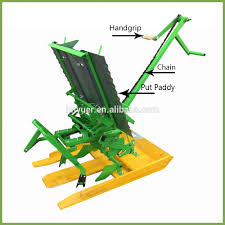
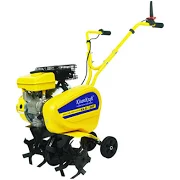
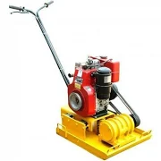
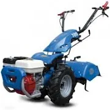
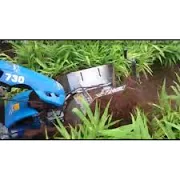
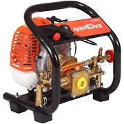

AGRICULTCURE MACHINERY

PADDY TRANSPLANTER
Price:Rs14,000
TO BOOK click-here

Kisankraft Petrol Inter-Cultivator KK-IC-100P LG0545
Price:Rs17,000
TO BOOK click-here

Earth-Rammer
Price:Rs55,000.00
TO BOOK click-here
Seed Drill 9 Type Automatic
Price:Rs58,000
TO BOOK click-here

Honda Power Tiller FJ 500 RD
Price:Rs1,02,960
TO BOOK click-here

BKR Thermal Fogging Machine LG0546
Price:Rs32,000
TO BOOK click-here

Mini Chaff Cutter
Price:Rs21,000
TO BOOK click-here

Power Weeder
Price:Rs2,03,122.00
TO BOOK click-here

Turumaric Rotavetor
Price:Rs2,31,393.00
TO BOOK click-here

Ginger and Turmeric Inter Cultivator Soil
Price:Rs2,44,814
TO BOOK click-here

Neptune PW 768 High Pressure Sprayer with 2 Stroke Engine
Price:Rs8,156.00
TO BOOK click-here